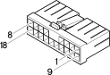

M40B Integrated services control unit ( REAR )
- Path
- Electrical equipment > Connectors > M Intermittent and timed electronic devices,.. > M40 Integrated services control unit > M40B Integrated services control unit ( REAR )
- Kind
- connector pinout (pin -> wire colour -> other end)
- Applies to
- engines: 1.6 TS , 1.8 TS, 2.0 JTS, 2.5 V6, 3.2 V6, 1.9 JTD 8v , 1.9 JTD 16v, 2.0 JTS, 2.4 JTD 10v, 2.4 JTD 20v; all production periods; only with equipment: Station Wagon
- Interactive page
- https://sloeber94.github.io/elrnDB-a156/en/#/3236891
Applies to: engines: 1.6 TS , 1.8 TS, 2.0 JTS, 2.5 V6, 3.2 V6, 1.9 JTD 8v , 1.9 JTD 16v, 2.0 JTS, 2.4 JTD 10v, 2.4 JTD 20v; all production periods; only with equipment: Station Wagon

Wiring | Colour |
|---|---|
BIANCO (white) |
Pin | Cable | Destination | |||
|---|---|---|---|---|---|
Sec.. | Colour | Nodo | Connect. | Pin | |
M (brown) | |||||
HV (grey with green stripe) | |||||
HG (grey with yellow stripe) | |||||
G (yellow) | |||||
H (grey) | |||||
RG (red with yellow stripe) | |||||
C (orange) | |||||
HL (grey with blue stripe) | |||||
LB (blue with white stripe) | |||||
N (black) | |||||
NZ (black with violet stripe) | |||||
A (light blue) | |||||
B (white) | |||||
LN (blue with black stripe) | |||||
Topics linked from this page (14)
- 25 REAR
- B1E Junction unit ( FACIA )
- B1G Junction unit ( FACIA )
- C20B Passenger side dashboard earth ( REAR )
- D20 /Rear dashboard coupling
- D30 Front left door connection
- D31 Coupling for rear/right front door
- D35 Rear / rear door coupling left
- D36 Rear right door connection
- D6A Front / rear connection ( FRONT )
- G31 Driver's sun blind light
- G32 Passenger sun blind light
- H35 Switches assembly on central console
- P92 Subwoofer
Topics that link to this page (85)
- 5020A12 heater casing - r+r with facia removed
- 5020B31 air distribution flap control cable(one) - r r
- 5020B42 air mixer flap control cable - r+r
- 5020B60 outside air/recirculation flap control actuator - r+r following wiring check
- 5040C12 air conditioner housing - r r with facia disconnected
- 5040D52 air inlet and recirculation flap actuator - r r
- 5040D76 air contitioner distribution flap control motor - r r
- 5505A18 multi-function control unit - r r
- B1E Junction unit ( REAR )
- B1E Junction unit ( REAR )
- B1G Junction unit ( REAR )
- B1G Junction unit ( REAR )
- B1G Junction unit ( REAR )
- C20B Passenger side dashboard earth ( REAR )
- C20B Passenger side dashboard earth ( REAR )
- C20B Passenger side dashboard earth ( REAR )
- C31 Rear right earth ( REAR )
- C31 Rear right earth ( REAR )
- D20A /Rear dashboard coupling ( REAR )
- D20A /Rear dashboard coupling ( REAR )
- D20A /Rear dashboard coupling ( REAR )
- D20B /Rear dashboard coupling ( REAR )
- D20B /Rear dashboard coupling ( REAR )
- D20 /Rear dashboard coupling ( REAR )
- D20 /Rear dashboard coupling ( REAR )
- D20 /Rear dashboard coupling ( REAR )
- D20 /Rear dashboard coupling ( REAR )
- D20 /Rear dashboard coupling ( REAR )
- D20 /Rear dashboard coupling ( REAR )
- D20 /Rear dashboard coupling ( REAR )
- D20B /Rear dashboard coupling ( REAR )
- D30 Front left door connection ( REAR )
- D30 Front left door connection ( REAR )
- D30 Front left door connection ( REAR )
- D30 Front left door connection ( REAR )
- D30 Front left door connection ( REAR )
- D30 Front left door connection ( REAR )
- D30 Front left door connection ( REAR )
- D30 Front left door connection ( REAR )
- D30 Front left door connection ( REAR )
- D30 Front left door connection ( REAR )
- D31 Coupling for rear/right front door ( REAR )
- D31 Coupling for rear/right front door ( REAR )
- D31 Coupling for rear/right front door ( REAR )
- D31 Coupling for rear/right front door ( REAR )
- D31 Coupling for rear/right front door ( REAR )
- D31 Coupling for rear/right front door ( REAR )
- D31 Coupling for rear/right front door ( REAR )
- D31 Coupling for rear/right front door ( REAR )
- D31 Coupling for rear/right front door ( REAR )
- D31 Coupling for rear/right front door ( REAR )
- D35 Rear / rear door coupling left ( REAR )
- D35 Rear / rear door coupling left ( REAR )
- D35 Rear / rear door coupling left ( REAR )
- D35 Rear / rear door coupling left ( REAR )
- D35 Rear / rear door coupling left ( REAR )
- D35 Rear / rear door coupling left ( REAR )
- D36 Rear right door connection ( REAR )
- D36 Rear right door connection ( REAR )
- D36 Rear right door connection ( REAR )
- D36 Rear right door connection ( REAR )
- D36 Rear right door connection ( REAR )
- D36 Rear right door connection ( REAR )
- D6A Front / rear connection ( REAR )
- D6A Front / rear connection ( REAR )
- D6A Front / rear connection ( REAR )
- D6A Front / rear connection ( REAR )
- D6A Front / rear connection ( REAR )
- D75 Radio phone junction ( REAR )
- D75 Radio phone junction ( REAR )
- D75 Radio phone junction ( REAR )
- D75 Radio phone junction ( REAR )
- D76 TELEPASS" connection" ( REAR )
- G31 Driver's sun blind light ( REAR )
- G32 Passenger sun blind light ( REAR )
- H35 Switches assembly on central console ( REAR )
- H35 Switches assembly on central console ( REAR )
- H35 Switches assembly on central console ( REAR )
- H35 Switches assembly on central console ( REAR )
- H35 Switches assembly on central console ( REAR )
- I50 Inertia switch ( REAR )
- M35 Alarm remote control receiver ( REAR )
- M35 Alarm remote control receiver ( REAR )
- M35 Alarm remote control receiver ( REAR )
- P92 Subwoofer ( REAR )